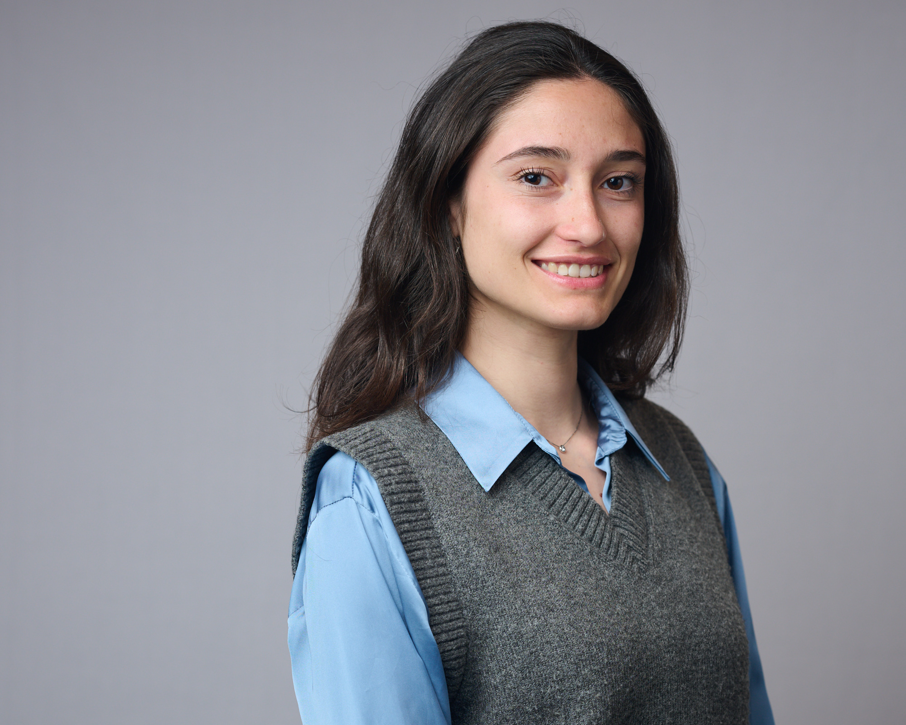

Visiting Research Fellow
Sep 2026 – Present
NATO Centre for Maritime Research and Experimentation (CMRE) · La Spezia, Italy
PhD student in Physics, Astrophysics and Applied Physics
University of Milan
I study quantum computing algorithms for optimization and quantum sensing, with applications in maritime navigation and space exploration. My research includes job shop scheduling with quantum annealing and sensing with NV centres.
Milan, Italy

Sep 2026 – Present
NATO Centre for Maritime Research and Experimentation (CMRE) · La Spezia, Italy
Oct 2025 – Mar 2026
Waseda University · Tokyo, Japan
School of Fundamental Science and Engineering · Quantum Sensing group, Tanii-lab · Supervisor: Prof. Tanii Takashi.
Feb 2025 – May 2025
University of Milan · Milan, Italy
Mar 2024 – Jul 2024
University of Milan – Physics Department · Milan, Italy
University of Milan
Oct 2024 – Jan 2028 (expected)Project: Quantum computing algorithms for maritime and underwater applications.
Group: Quantum Intelligence Lab (Supervisor: Prof. Enrico Prati).
University of Milan-Bicocca, University of Milan, University of Pavia
Oct 2022 – Sep 2024Final mark: 110/110 cum laude
Thesis: Adiabatic Quantum Computing for Space Missions Scheduling.
University of Milan-Bicocca
Sep 2019 – Nov 2022Final mark: 109/110
Thesis: Use of gold nanoparticles for neuronal stimulation.
2025 IEEE International Conference on Quantum Computing and Engineering (QCE) , IEEE, 2025, pp. 2161–2169. Conference paper.
PaperEPJ Quantum Technology 12, article 66 (2025). Journal article.
PaperCo-authored review of optimization, quantum machine learning, and connections with other quantum technologies for space applications.
Journal of Physics: Conference Series 3017, article 012042 (2025). IOP Publishing. Conference paper.
PaperProceedings of the International Astronautical Congress (IAC) , 2024, pp. 273–277. Conference paper.
Paper2024 IEEE International Conference on Quantum Computing and Engineering (QCE) , IEEE, 2024, pp. 514–515. Conference paper.
Paper31 Aug-5 Sep 2025 · Albuquerque, New Mexico
Conference · Oral presenter · IEEE Institute of Electrical and Electronics Engineers
8–13 Jun 2025 · Sleat, Scotland
Research school · Selected participant · ICMS International Centre for Mathematical Sciences
16–21 Mar 2025 · Anaheim, California
Conference · Oral presenter · APS American Physical Society
12–13 Dec 2024 · Bologna, Italy
Conference · Oral presenter · CINECA
14–18 Oct 2024 · Milan, Italy
Conference · Poster presenter · IAF International Astronautical Federation
16–20 Sep 2024 · Castiglioncello, Italy
Conference · Conference secretary and poster presenter
Qiskit, PennyLane, D-Wave Ocean SDK, D-Wave Leap, Azure Quantum, IBM Quantum
Python, R, MATLAB, C/C++
PyTorch, PyTorch Geometric, DGL, scikit-learn, SciPy, Pandas, NumPy, NetworkX, Gurobi
Git, Conda, Linux/Windows, LaTeX
Italian (native), English (C1 Advanced)